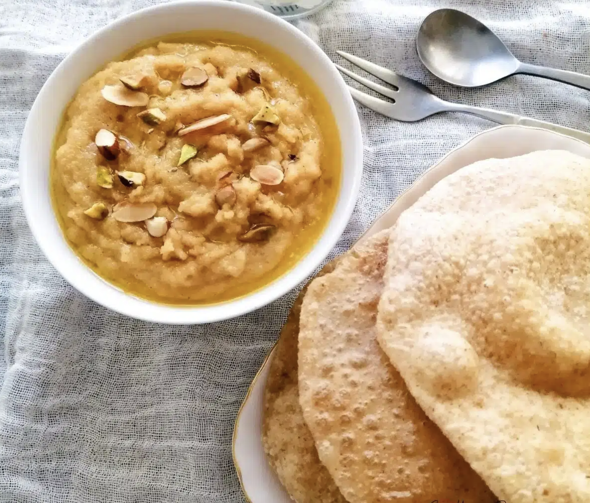

Halwa Puri

Ingredients
For the Halwa:
- 1 cup coarse semolina
- ½ cup sugar
- 2 ⅓ sticks salted butter
- 2.5 cups whole milk
- A handful of mixed nuts chopped
- 3-4 green cardamoms
For the Puri:
- 1- cup Atta flour
- ½ cup + 1 tbsp water
- ½ teaspoon oil + extra for greasing
- Oil for frying
Instructions
For the Halwa:
- Put the semolina on a cooking pan, and dry-fry at moderate-high heat. Take care and keep stirring to ensure the semolina is evenly cooked
- When the semolina releases an aroma and turns in a slightly darker colour, put the butter in. Mix well until all the butter melts. You will see the semolina soaked in melted butter. It is okay. You can put the green cardamom seeds at this point if using.
- Then add in the sugar, stir and cook until it melts.
- Next, put the chopped nuts, stir well.
- Lastly, pour the milk in slowly as you stir it carefully. The mixture will be very wet. Do not worry. Just keep mixing and cooking until the liquid all disappears.
- Enjoy!
For the Puri:
- Put the flour in a mixing bowl. Make a well in a centre, then pour the water and oil in. Using your hand, mix it and knead lightly, until you get a smooth and pliable dough. When you finish kneading, roll and shape the dough into a ball and grease its surface with a little oil. Leave it to rest in the mixing bowl and cover it with a tea towel for about 20-30 minutes.
- When you are ready to cook the Puri, divide and shape the dough into six equal-sized small balls. Then roll them into a circular shape about 12-15 cm in diameter with around 2 mm thickness. You can use a little flour for dusting to make the rolling easy. But take care not to use too much as the flour dust can cause the oil cloudy.
- Heat the oil in a large frying pan or a wok at moderate-high heat. Test the oil temperature by frying a little piece of dough. If it is frying right away, your oil is ready.
- Once the oil is hot and ready, carefully slide the rolled dough into the oil. Using a slotted turner, try to keep pouring the oil over the surface of the dough. And gently press into the oil, the part of the flatbread that has not puffed up.
- Your Puri is ready when it turns light golden.
- Enjoy!